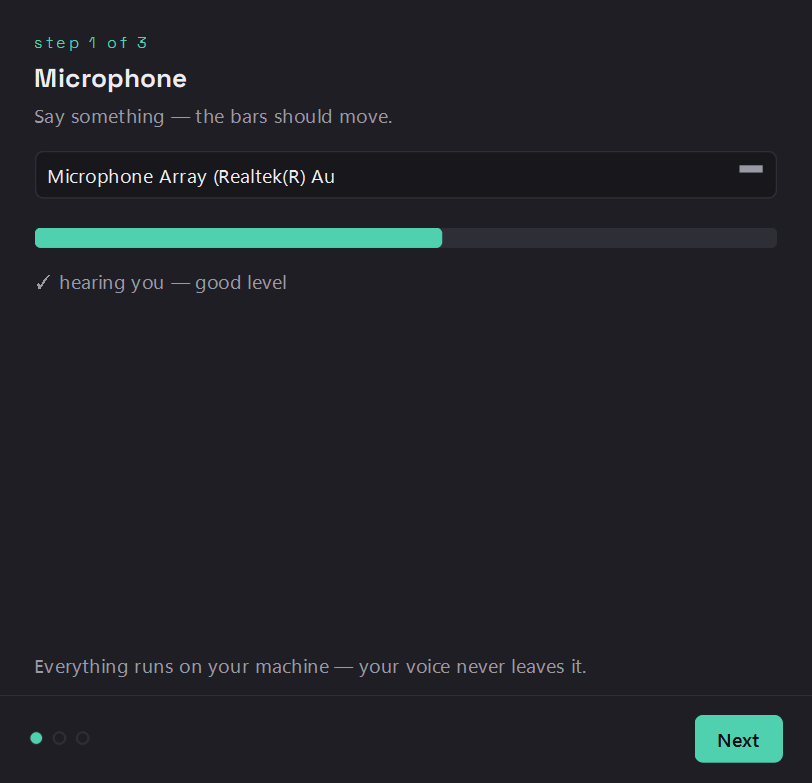
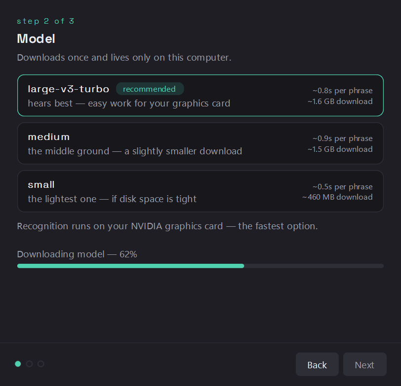
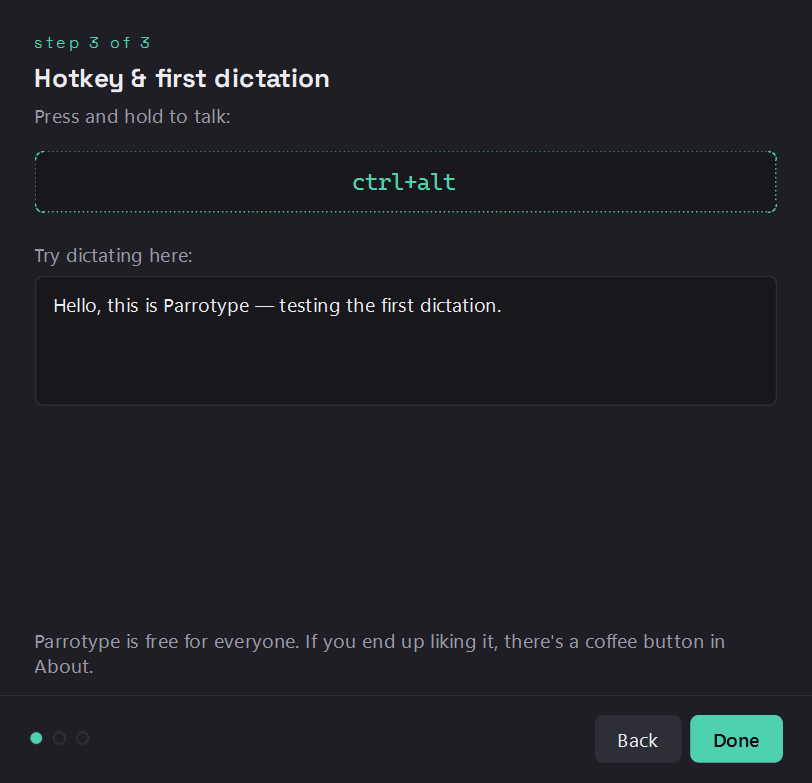
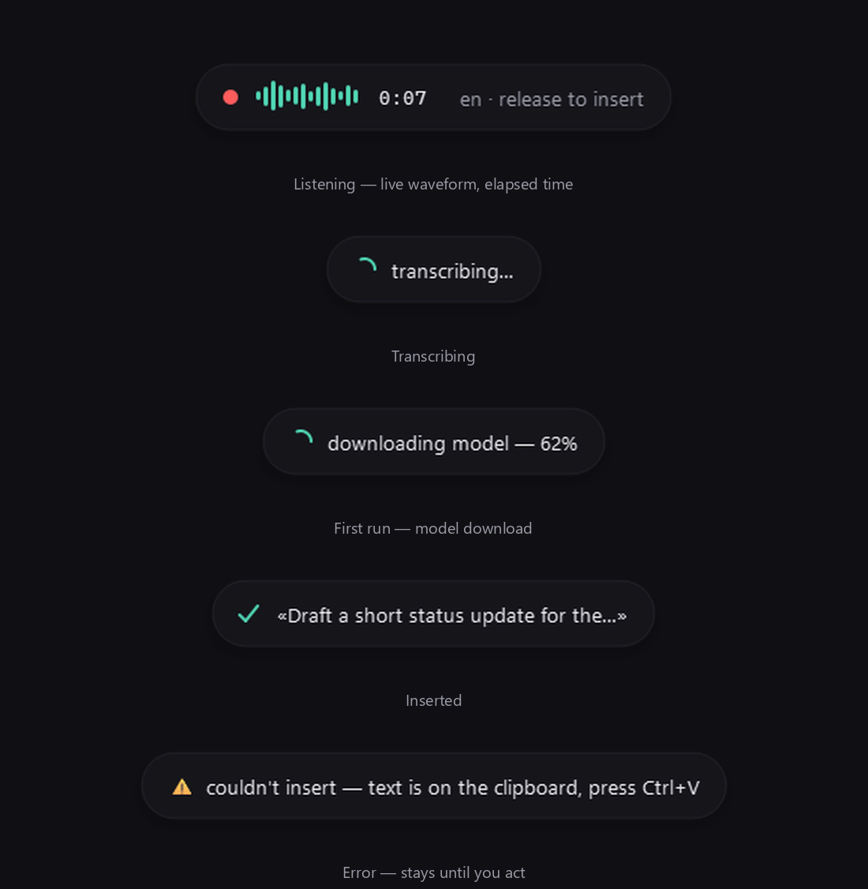
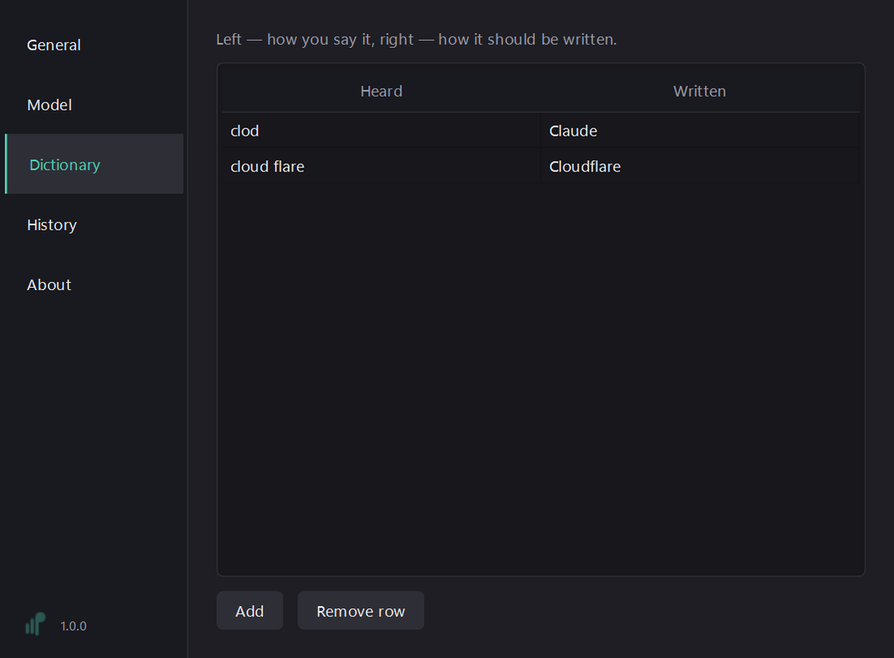
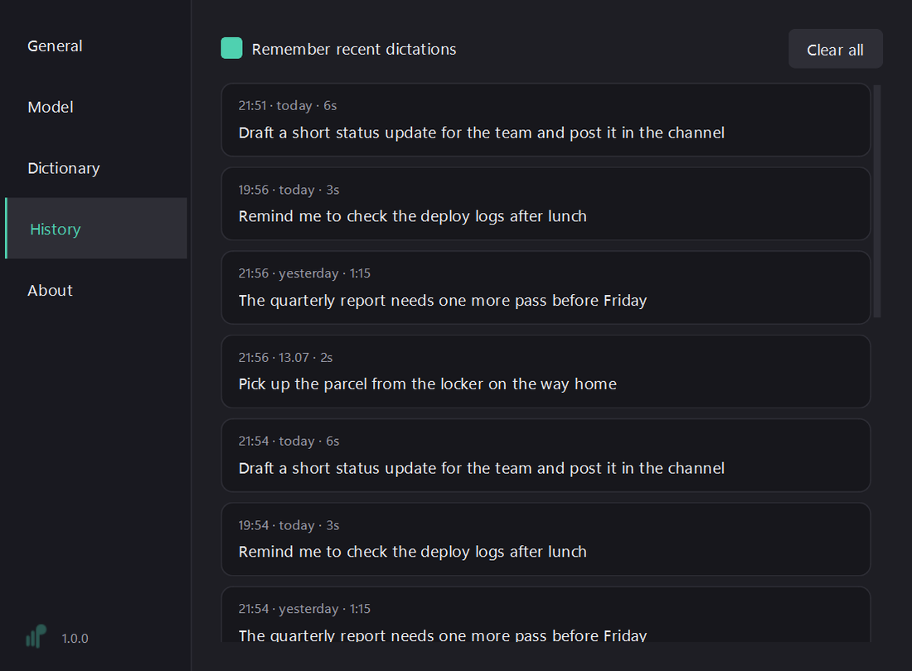
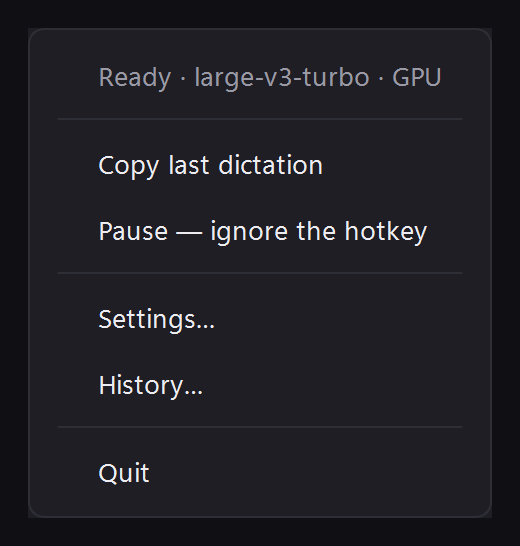
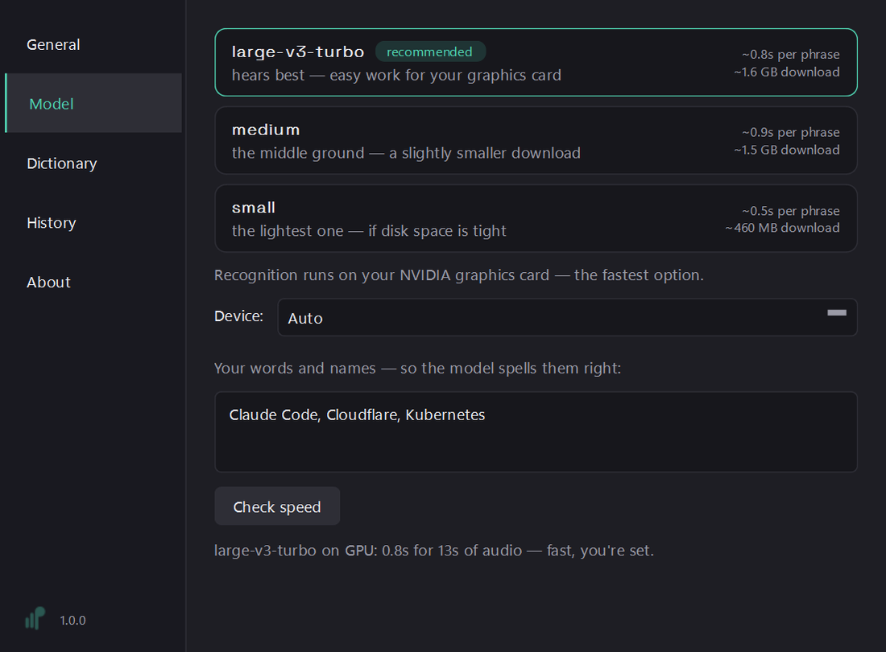
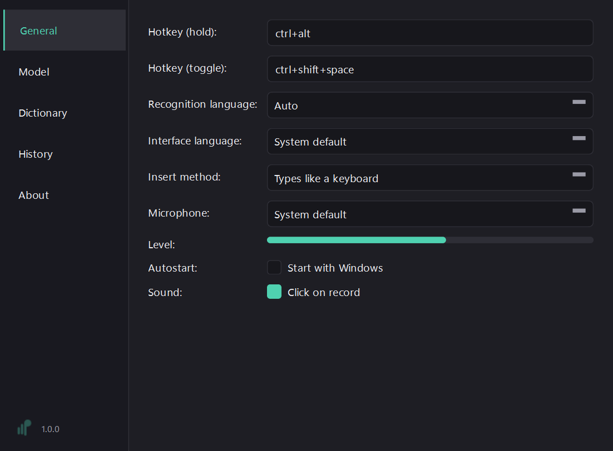
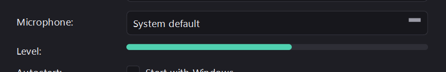

Parrotype guide
Getting started · Everyday use · Troubleshooting
Everything about Parrotype fits on this page. Ctrl+F is your friend.
Getting started
1. Download and install
Grab ParrotypeSetup.exe and run it. Windows SmartScreen will warn about an unknown publisher — the installer isn't code-signed yet. Click More info → Run anyway. (Why this happens — see Troubleshooting.)
2. First-run wizard — step 1: Microphone
Say something — the bars should move. When you see "✓ hearing you — good level", you're good. No microphone found? Plug one in and come back to this step.
Everything runs on your machine — your voice never leaves it.

3. Step 2: Model
Parrotype checks your hardware and recommends a model: with an NVIDIA graphics card recognition runs on GPU (fastest), otherwise on CPU. The model downloads once — ~75 MB to ~3 GB depending on which you pick — and lives only on this computer. You can change it later in Settings and measure real speed on your machine.

4. Step 3: Hotkey and first dictation
Hold Ctrl+Alt, say a sentence into the test field, release. The text appears — that's the whole workflow. From now on it works in any window: editor, browser, chat, terminal.

Everyday use
Two ways to talk
- Hold to talk: hold Ctrl+Alt, speak, release — text is inserted where your cursor is.
- Hands-free: press Ctrl+Shift+Space to start, press again to stop.
- Changed your mind: Esc cancels the recording — nothing gets inserted.
Both hotkeys are editable in Settings → General (formats like ctrl+alt, ctrl+shift+space). The little pill at the bottom of the screen shows what's happening — listening, transcribing, inserted. It never steals focus.

Teach it your words
Two tools:
- Replacement dictionary — Settings → Dictionary: exact fixes, left is what you say (Heard), right is what should be typed (Written). E.g. “clod” → Claude, and it will always be written that way.
- Your words and names — Settings → Model: a free-text field for anything you dictate often: products, surnames, jargon (Claude Code, Cloudflare, Kubernetes…). The model uses it as context and spells them right. Dictionary entries feed it automatically.

Recognition language
Settings → General → Recognition language. Fourteen languages that passed a measured quality gate — English, Russian, Spanish, German, French, Italian, Portuguese, Polish, Ukrainian, Dutch, Turkish, Japanese, Korean, Chinese — plus auto-detect for the 90+ languages Whisper knows.
How text gets inserted
Two methods in Settings → General → Insert method:
- Types like a keyboard (default) — short and medium texts are typed directly, clipboard untouched. Very long texts (1000+ characters) automatically fall back to a careful clipboard paste.
- Pastes via clipboard — always pastes; plain-text clipboard contents are put back afterwards (images or rich content can't be restored — a v1 limitation).
If some app garbles the typed text, switch to clipboard — that's what it's for.
History
Tray icon → History, or Settings → History. The last 50 dictations, stored locally — click a card to copy it, hover for delete, or clear everything at once. The tray menu also has Copy last dictation for the “wait, what did I just say” moment. Don't want a trail? Untick Remember recent dictations.

The tray menu
Right-click the parrot: Copy last dictation, Pause (ignore the hotkey — useful before a call), Settings, History, Quit. The icon shows state: idle, recording, paused.

Model and speed
Settings → Model — pick a model and hit Check speed: it measures this model on this computer and tells you honestly whether it's fast, decent, or you should pick a smaller one. Recognition device (GPU/CPU/auto) is here too.

Small comforts
Autostart with Windows and the record-click sound are both in Settings → General. UI language (English/Russian) follows your system, or set it by hand.

Troubleshooting
The microphone is silent
- The pill says "microphone is muted by the system" — click the pill, it unmutes.
- Still nothing? Open Settings → General and watch the level meter while talking. Try picking the device explicitly instead of System default.
- Level dead in every app? Check Windows: Settings → Privacy & security → Microphone — microphone access must be on for desktop apps.

SmartScreen blocks the installer
Windows warns because the installer isn't code-signed — a signing certificate costs real money every year, and Parrotype is free. The warning means "unknown publisher", not "malware". Click More info → Run anyway. Prefer to trust code, not words? The source is public — build it yourself in four commands.
Recognition is slow on my machine
Use Settings → Model → Check speed — it gives you a real number for your hardware. If it says slow, pick a smaller model: quality drops a little, speed jumps a lot. On CPU, small is the sane default; base and tiny are lighter still. Got an NVIDIA card? Settings → Model → Enable GPU downloads the CUDA runtime once (~1.4 GB) — after that the best model does a 13-second phrase in about 0.8 s.
Text comes out broken in one specific app
Switch Settings → General → Insert method to Pastes via clipboard. Some apps mishandle simulated typing; the clipboard route is bulletproof, and plain-text clipboard contents are restored afterwards.
If the pill ever says "couldn't insert — text is on the clipboard" — the text is already copied, just press Ctrl+V.
Didn't find your case? Open an issue — describe what you did and what you saw.